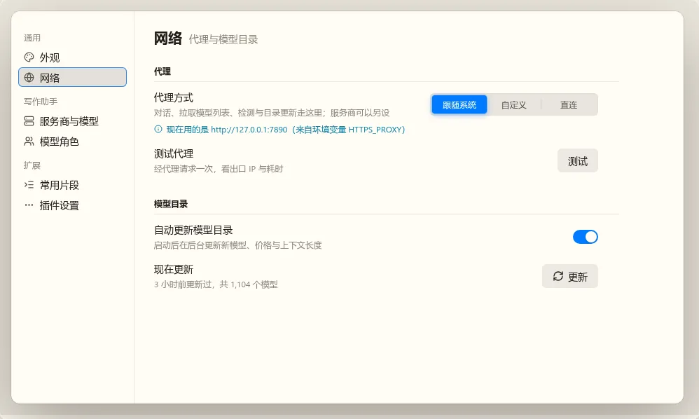
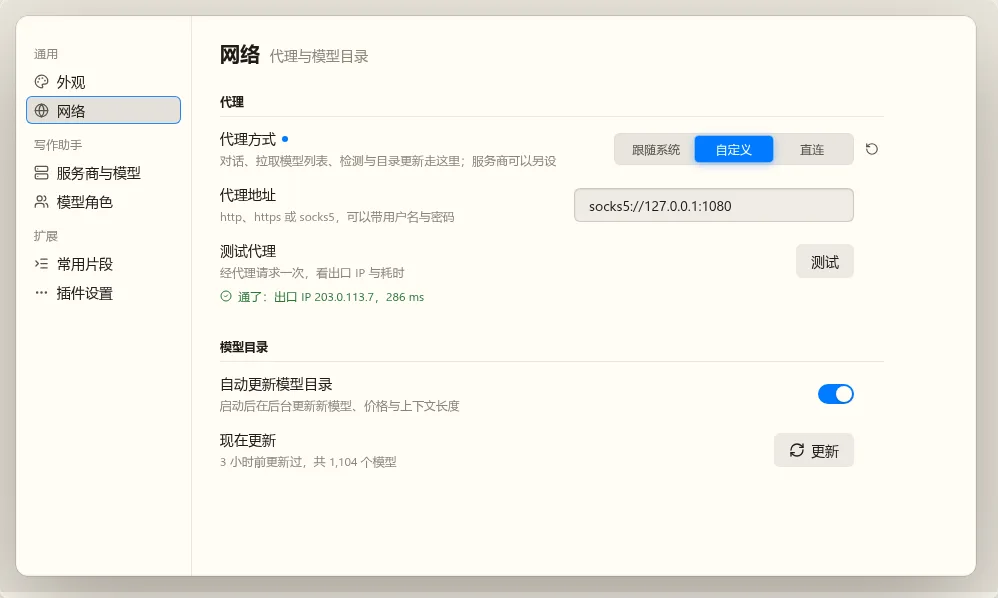
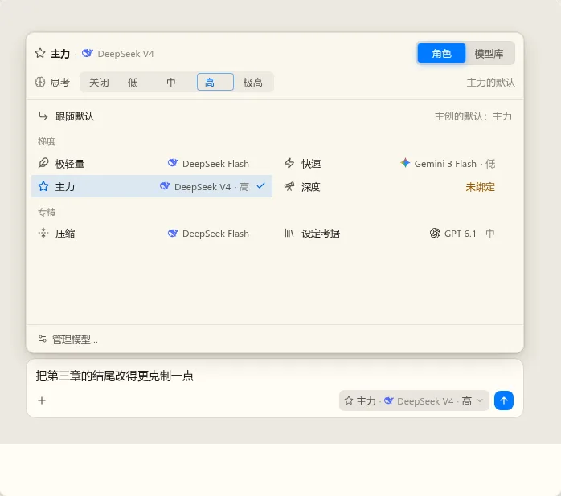
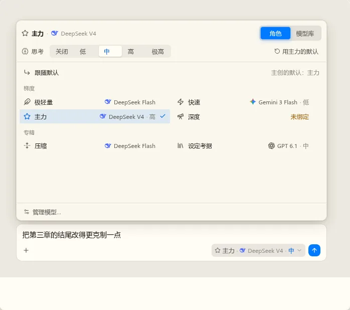
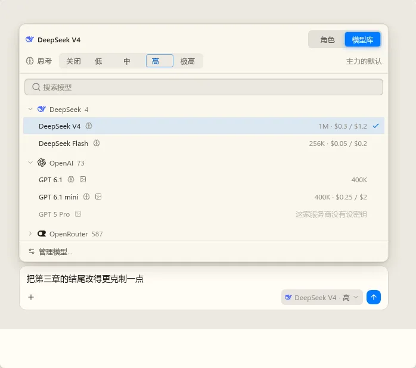

第 3 轮：网络分区重画、思考档排版
“网络”分区按这一稿做？
推荐同意：这次照“外观”页的画法（标题行、带分隔线的小组、左名称右控件、行下信息色的提示行），与设置窗口里其它页一致。


选择器头部的思考档这样排？
推荐同意：思考的图标与上一行角色图标同一列；各档等宽；“主力的默认”或“用主力的默认”贴到行尾，与“角色｜模型库”右边对齐；阴影已换成轻的那档。
跟随角色

会话里改过

模型库页

已定
- 服务商只有一种：都从模板复制，名称、协议、地址、图标都能改
- 添加后加入全部对话模型，几百个也加；设置里只记移除和改过的
- 在线目录默认开，给“自动更新模型目录”开关
- 图标用 @lobehub/icons-static-svg；自定义支持上传与首字母方块
- 代理：应用级在“网络”分区、服务商级在“高级”；跟随系统、自定义、直连
- 思考档：会话里选的 > 角色上设的 > 模型默认；控件不再隐藏
- 协议检测照 Magpie 并行发四种极小请求
- 选择器里的角色两列紧凑行（第 1 轮）
- 思考档用分段按钮，样式再调（第 1 轮）
- 气泡这档的阴影整体调轻（第 1 轮）
- “添加服务商”分组、组内多列的行（第 1 轮）
- 思考档用 C 浮起的纸（第 2 轮）
- 服务商详情按第 2 轮的稿（第 2 轮）
- 角色页的思考档按第 2 轮的稿（第 2 轮）